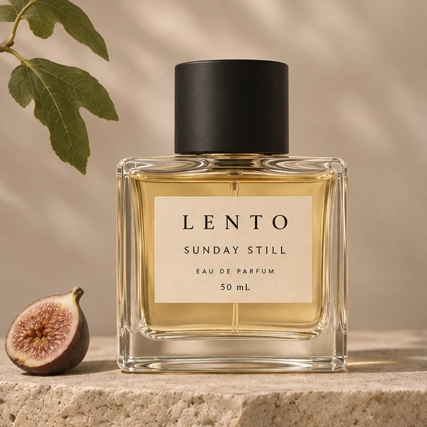
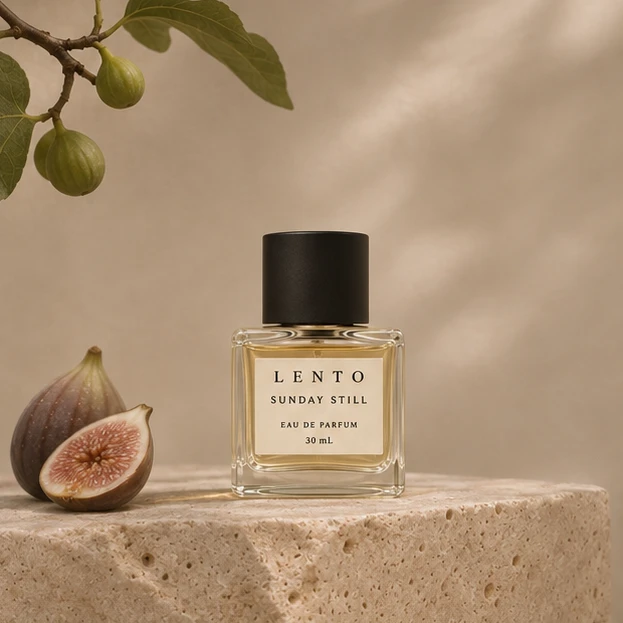

A SLOW MORNING
나를 위한 아침
외출 전 손목에 가볍게 한 번.
오늘의 시작을 나만의 향으로 채워보세요.
A QUIETER WAY TO WEAR SCENT
당신의 속도로,
여유가 남는 향.
무화과 잎, 부드러운 꽃잎, 비 갠 숲의 공기.
네 가지 향으로 일상에 조용한 여백을 더합니다.

SUNDAY STILLA MOMENT, HELD IN SCENT.
창문 사이로 들어오는 햇살, 책장을 넘기는 소리,
아무 약속 없는 일요일 오후.
LENTO는 오래 머물고 싶은 장면에서 시작합니다.
덜어낸 형태, 섬세하게 겹치는 향, 그리고 조용한 여운.
각자의 속도로 살아가는 일상에 작은 여백을 만듭니다.
Less rush.
More you.
02 / THE COLLECTION
기분에 맞는 향을 골라보세요. 아래에서 선택한 향의 노트와 상품 정보를 확인할 수 있어요.
선택한 향 · 선데이 스틸
선택한 향의 노트 보기 ↓03 / THE SCENT
처음의 싱그러움부터 마지막의 포근함까지.
시간이 흐르며 달라지는 향의 표정을 느껴보세요.
THE FIRST IMPRESSION
초록빛 무화과 잎에 베르가모트의 산뜻함을 더했습니다. 창문을 열었을 때의 맑은 공기처럼, 가볍고 기분 좋게 시작됩니다.
각 노트를 눌러 향의 변화를 살펴보세요 ↗
A quiet kind of presence.
크게 드러내지 않아도, 오래 기억되는 존재감.04 / YOUR DAILY RITUAL
A SLOW MORNING
외출 전 손목에 가볍게 한 번.
오늘의 시작을 나만의 향으로 채워보세요.
A LITTLE BREAK
바쁘게 흘러가는 오후, 익숙한 향에 집중하며
잠시 호흡을 고르는 시간을 가져보세요.
YOUR OWN EVENING
좋아하는 음악과 읽다 만 책 한 권.
잔잔하게 남은 향과 함께 하루를 마무리해요.

LENTO / SIGNATURE COLLECTION05 / FIND YOUR SLOW MOMENT
선데이 스틸 오 드 퍼퓸
일요일 오후의 느긋함을 담은 무화과 우디 향.
가볍게 시작해, 당신만의 온기로 남습니다.
가상의 브랜드를 소개하는 콘셉트 페이지입니다.
체험 주문은 이 브라우저에 저장되며 실제 결제는 진행되지 않습니다.
선데이 스틸 오 드 퍼퓸 선택 용량 1개와 패키지로 구성한 가상 상품입니다. 상품명·향 구성·가격은 디자인을 위한 예시입니다.
눈과 점막을 피해 사용하고, 직사광선을 피해 보관하세요. 실제 제품을 사용할 때는 해당 제품의 표시 사항을 확인하세요.
06 / SCENT FILMS
오후 햇살이 무화과나무 사이로 스며들고, 바람에 잎이 가만히 흔들립니다.
UNTIL YOUR NEXT SLOW MOMENT